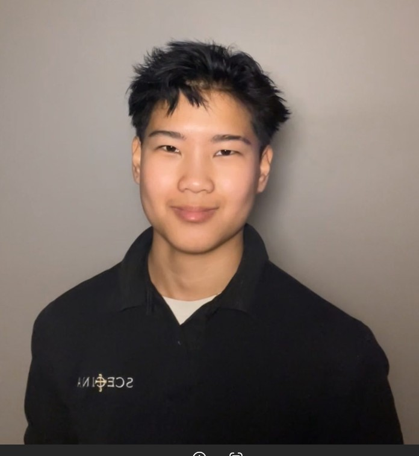
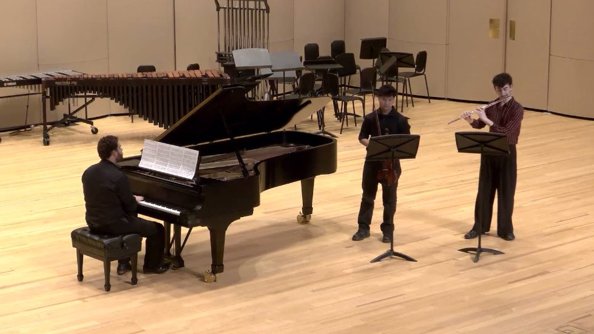
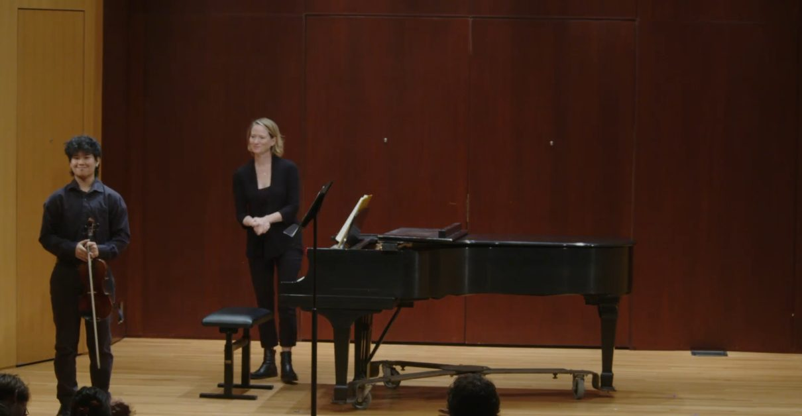

Helen
Tackett.
Curious by nature.
Engineer by practice.
I’m studying electrical engineering at Purdue University Indianapolis and music at Butler University. I like understanding how things work — and turning ideas into things I can test, improve, and build.

01 / SELECTED WORK
Things I’ve built.
From analog circuits to digital logic and aerospace design — projects where I got to learn by doing.
Engineering documentation
Explore full lab reports, measured results, CAD screenshots, and design iterations by opening a project card. These are original coursework and project writeups.
BEHIND THE BUILD
See the hardware in action.
Two short demonstrations from my analog electronics projects.
Original project photos and demos are included where available. The FPGA graphic is an illustration; the Lunar Lander source code is available through its project card.
02 / WHERE I’VE LEARNED
Experience & education.
Engineering teams, customer-facing work, and an interdisciplinary education.
INVOLVEMENT & EXPERIENCE
Purdue Space Program
2026 — presentStudent participant · Rocket design
CAD modeling, stability simulation, 3D-printing preparation, and team-based design iteration.
Whole Foods Market
2024 — 2025Cashier
Ranked #1 in items processed per minute while averaging 44% above store-wide cashier processing speed.
Air Force ROTC · Detachment 215
2024 — 2025Cadet
Cadet leadership and followership training, including serving as flight commander during a training activity.
Olive Garden
2022 — 2023Host & food runner
Coordinated with teammates and supported guest service during busy shifts.
LEADERSHIP & TEAMWORK
Scenes from my Air Force ROTC experience.


03 / A LITTLE ABOUT ME
More than one discipline.
I like the moment when something stops being a diagram and starts working in real life.
I’m pursuing two degrees at the same time: electrical engineering at Purdue University Indianapolis and music at Butler University. That mix shapes how I approach problems — with technical curiosity, attention to detail, and a willingness to practice until something clicks.
I’ve explored analog circuits, digital design, instrumentation, and rocketry. I’m especially interested in opportunities where I can work with a team, understand complex systems, and contribute to real hardware.
Outside engineering, I perform on violin and enjoy bringing creative and technical thinking together.
Let’s connect04 / THE OTHER HALF
A life in music.
Music and engineering might look different on paper, but both reward listening, iteration, and precision.

VIOLIN · PERFORMANCE
Discipline, collaboration, and expression.
As a violinist at Butler University, I’ve performed with the Butler Symphony Orchestra and Butler Ballet Orchestra, along with other live performances and gigs.
Rehearsing with an ensemble has taught me to prepare independently, listen carefully, and contribute to something bigger than my individual part.
PERFORMANCE MOMENTS
Recitals, small ensembles, and orchestra.


05 / NEXT STEPS
Let’s build something.
I’m interested in engineering internships, collaborative projects, and opportunities to keep learning through hands-on work.
Indianapolis, Indiana · United States
Add your verified LinkedIn and GitHub profile links here when you're ready.